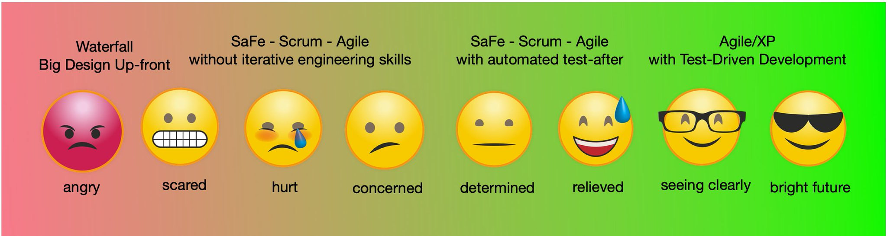
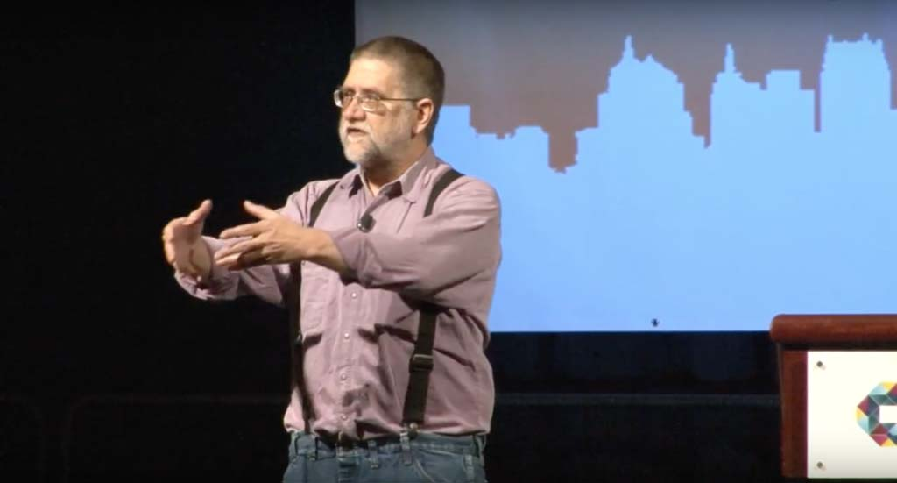
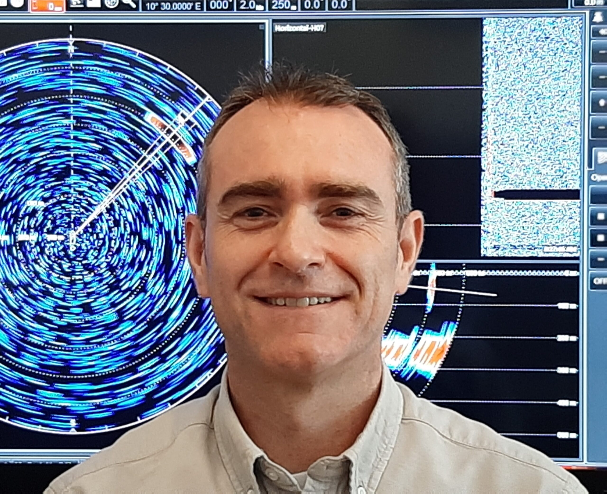
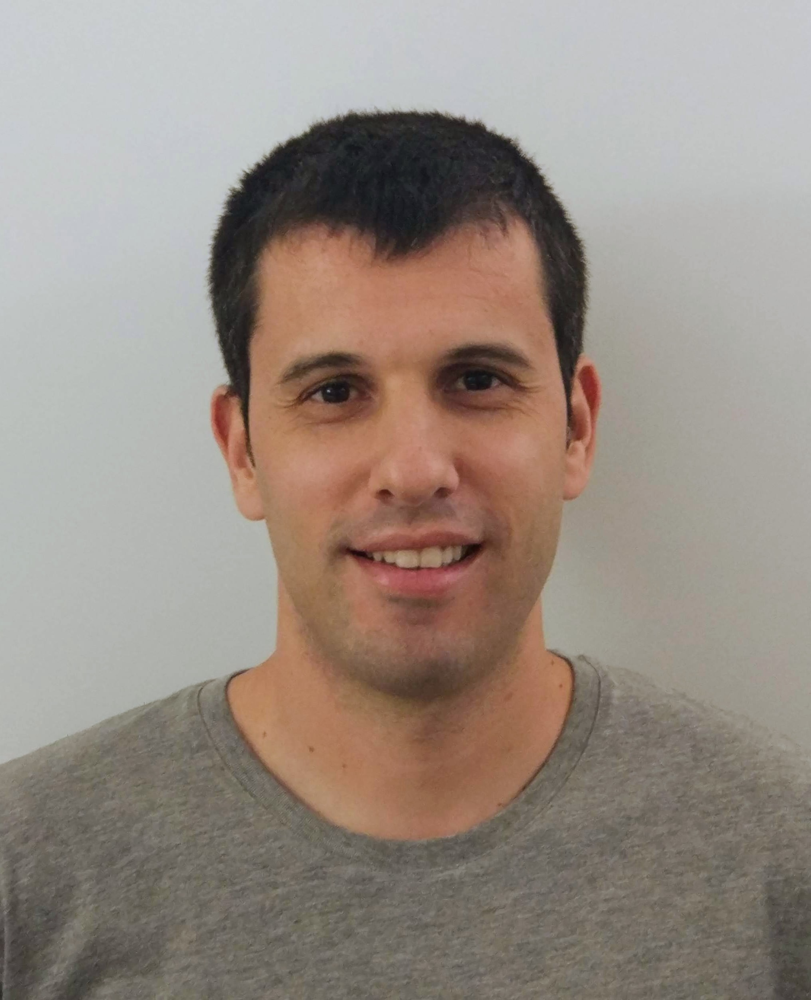

Alex Bunardzic, Organizer
Alex is a software engineering veteran with over 30 years of hands-on professional experience. A staunch advocate of Extreme Programming and TDD, Alex is currently leading DevOps teams by coaching them in TDD practices.
Opening Ceremony, Introduction and Welcome by the Organizer
Setting the stage for the TDD revolution, how did it all begin and where are we today with TDD.
James Grenning, USA
One of the original signatories of the Agile Manifesto, James Grenning trains, coaches and consults worldwide. With decades of software development experience, both technical and managerial, James brings a wealth of knowledge, skill, and creativity to software development teams and their management. As his professional roots are in embedded software, he is leading the way to introduce Agile development practices to that challenging world.
Agile Pain Relief Through Technical Excellence
Technical excellence is more than two week sprints, a burn-down chart and a daily stand-up meeting. The basic rules of Agile or Scrum are not an end in themselves, but rather a starting point based upon principles and practices that allow and encourage teams to adopt, adapt, and refine their craft.
Unfortunately, too many organizations are following Scrum-like dogma without serious problem solving. To the technical people, agile feels like micro-management mixed with hurry up!
The founders of Scrum expected you to pull in engineering practices once the retrospective revealed the need. Are you living with product defects, rigid code, debugging, long stabilization efforts and the ever growing burden of manual test? In this talk we’ll explore the agile technical practices and how they can help reduce the pain of development.

GeePaw Hill, USA
We all know and love GeePaw and his inimitable style of "Helping Geeks Produce for Over 40 Years."
Want More Value Faster? Take Many More Much Smaller Steps
"Take many more much smaller steps". It's blind advice, to people whose detailed context one really doesn't and can't know. But in the great majority of cases, blind though it may be, it's actually terrific advice. It's a fundamental element of test-driven development, but it's much more than that. Let's break it down: why it goes against our intuition, why it actually works, and why it covers so many contexts of change, from code, to self, to teams, to organizations, to the world.

Ola Kunysz, Poland
Ola Kunysz is a software engineer with 14 years of experience. Besides coding she has experience in business analysis and consulting. Since 2019 she runs her own company, educating programmers about software quality. She speaks at conferences, writes articles and produces online courses. Her biggest interest is solving real-life problems and writing code that matters. For 2 years she organized meetups and workshops of Geek Girls Carrots in Wrocław, Poland. She enjoys meeting people and working on interesting projects, so you can spot her on hackathons and conferences. When it’s time to relax, she’s offline [with dog (s), playing board games, in the mountains] *
Why you might not want to use TDD?
During this conference everyone will encourage you to use Test Driven Development. And I agree with them, you should at least try! This technique is very useful, sometimes even life changing for programmers who struggle with tests. But it’s no magic bullet. There are some arguments I hear from software engineers and I remember having some doubts myself. During my presentation I will address difficulties and disadvantages of TDD.
Olena Borzenko, Berlin, Germany
Olena is a full stack developer at The Adecco Group from Berlin in Germany. She has previously worked in a service company based in Ukraine and took a part in the creation of various products from small startups, B2B applications, to enterprise platforms.
Moreover, she is passionate about new technologies, clean code and best practices.
In her free time, when she’s not spending it on hobbies, she likes to build demos around real-life use cases, share knowledges with others, and the opposite, learn about someone else's experience.
TDD misconceptions
“TDD is when you write tests before implementing the business logic” - a simple sentence that is also highly misunderstood.
Moving from one project to another, I have observed how many times people were terrified of TDD. I have been there too. I, personally went through the frustration because of how often many tests were failing when I was just trying to move things around or refactor something. There was nothing wrong with the tool but in how it was being used.
This session will focus on trying to understand HOW and more importantly WHY you should consider TDD while avoiding such issues. I've transformed my failures into a series of lessons learned, things that in hindsight should have been obvious.
Liz Keogh, London, England
Liz Keogh is a Lean and Agile consultant based in London. She is a well-known blogger and international speaker, a core member of the BDD community and a passionate advocate of the Cynefin framework and of Wardley Mapping. She has a strong technical background with over 20 years’ experience in delivering and coaching others to deliver software, from small start-ups to global enterprises. Most of her work now focuses on Lean, Agile and organizational transformations, and the use of transparency, positive language, well-formed outcomes and safe-to-fail experiments in making change innovative, easy and fun.
TDD all the things
We all know the TDD cycle - red, green, refactor the code. But what would it look like if we applied it to something that wasn't code? Can you TDD a person? What about an organization? And what's the difference between TDD and BDD anyway?
In this talk Liz looks at some of the similarities between TDD, BDD, personal feedback, career development and cultural change, with 3 feedback models, a bit of Cynefin, well-formed outcomes, some Dreyfus, a pinch of complexity thinking, and a good stir.

Meenakshi Dhanani, India
Meenakshi Dhanani works as a Developer Advocate at Postman where she advocates best practices for Postman, the larger API community, and an API-first approach to software development. She was previously a software consultant at ThoughtWorks, where she trained employees and worked on projects applying XP(extreme programming) practices - TDD, CI/CD, pair programming by the book.
Which is better to Code by Contract: TDD or API-first?
During my time consulting clients on digital transformations and working my way through legacy code, I started on my TDD journey. I would often forget the keyword “driven” in Test-Driven Development and apply TDD as a Test Before Development variant. I focused on writing tests before code, and so did not have much impact on the design of the code. But once I learned to drive implementation via tests and the emphasis on the contract, my coding style started to differ drastically, for the better, of course.
Throughout my journey at Postman, I was exposed to another approach in the contract-driven toolbox called API-first. In this talk, I will compare the TDD and API-first approaches, analyzing parallels and observing their impact on contracts in software delivery.
Francisco Climent, Spain
Fran is a telecommunications engineer with more than 15 years of experience developing electronics products, both hardware and software. During most of these years, he failed to follow a sustainable, iterative and defect-free development process in every project he was involved. And he was not alone. Every team member had the belief that 'embedded is hard'.
Six years ago he discovered TDD, which led him to XP, Agile, and Craftsmanship. It was a revealing moment: he felt like he had been living inside Plato's cave. Like a prisoner suffering Stockholm syndrome with his beloved hardware, being devoid of the proper principles, knowledge and tools to consider himself a true professional. Nowadays, he helps teams and organizations to improve their development processes as a part of his long road to software craftsmanship.
'Unembedding' embedded systems with TDD: benefits of going beyond the make-it-work phase
In this talk, I summarize what living inside Plato's cave meant to me and the reasons why I believe most embedded software developers remain trapped inside the hardware bottleneck. I will explain the benefits awaiting outside the cavern and I will show you how, by means of TDD, you can perform safe, small and incremental steps to definitely abandon it. I can only assure one thing: once you leave it, there is no turning back.

Jov Mit, Netherlands
Jov is a software craftsman and TDD practitioner, working on Android for around 10 years now. He has a big passion for clean code, TDD, software craftsmanship, and knowledge sharing. He co-organized the DevTernity conference.
Introduction to TDD - How to get started with test-driving your code
It makes me happy to see more and more content online that helps people get started with TDD. Yet many folks find it hard to figure out some of the essentials of TDD and some of the why's between the Red-Green-Refactor cycle. I believe that's why TDD doesn't make a perfect click for them. In this talk, I'll try to bring those details to the surface and hopefully present TDD as a simple practice.
Jan Giacomelli, Slovenia
Python - a language made for test-driven development
Abstract
Test-driven development is all about small steps and short feedback loops. The faster you know whether the system works or not the easier the development. Python is not the first language that pops into someone's mind when talking about TDD. Nevertheless, when you work with it you start realizing that it's perfect language. There's no overhead to have a working unit - you can write a simple function. There's no compilation - test suite starts immediately. You need zero dependencies to start with TDD - *unit test* library is built-in in standard library.
This talk is a roadmap through TDD philosophy in Python world.
Description
This talk takes a look at TDD ideas from Python perspective. It shows how to start super simple and develop solution further. It explains which tools to use and how to use them to shorten feedback loops and increase test quality. It demonstrates how to use test-driven development and Python beyond typical "apply 10% discount to all orders over $100" use cases.
Introduction - (5 min)
I'll start with issues TDD partitioners face:
- long time to start a test suite
- writing lots of code for a simple tests case
- writing lots of code for a simple implementation
- installing 3rd party dependencies just to start writing tests
- ML -like solutions seems to be untestable
First tests in Python - (10 min)
First we'll take a look at how to write simple tests in Python using *unit test*. After that, we'll take a look at *pytest* which simplifies writing tests even more. I'll show how to run tests suite, use auto-discovery of tests and how fast tests run.
Practicing TDD with Python (15 min)
In this section we'll take a look at implementation of simple use case as a function. Next, we'll extend the it to full class use case with injected mocked repository. I'll show that simple in Python really means simple, you can really do super small steps and why duck typing is TDD's best friend.
- bare bones use case implemented as a function
- use case implemented as a class with injected repository
- type hinted working use case with formal interface
Python and ML - a perfect couple (15 min)
This section will explain how to approach ML (or similar problems) in a TDD way. We'll take a look at how to write tests in "error is less than epsilon" way. We'll implement dummy classifier that'll pass the test.
Dániel Moka, Hungary
Daniel Moka is a TDD enthusiast and boundary pusher who has a strong passion for crafting quality software while using education to change the world. He has a solid background in building enterprise solutions using the .NET stack deployed to cloud environments. He is on a mission to raise the software quality standards worldwide and to help individuals and corporates to produce efficient, elegant, and quality software.
TDD Manifesto
The Agile Manifesto is still the most relevant published declaration of software engineering, released exactly 20 years ago, describing and uncovering better ways of developing software. Inspired by the Agile Manifesto, a group of passionate software professionals is launching the TDD Manifesto at this first international TDD conference. The TDD Manifesto will describe the main values of TDD, how to use and apply it in practice, exposing the myths, and most importantly, revealing the power of this magnificent tool we call Test Driven Development.

Mario Cervera, Spain
Mario has been a software professional for more than a decade. He also conducted research in the field of Software Engineering, which allowed him to graduate as a PhD in Computer Science. As a strong advocate of software craftsmanship principles and values, he helps teams improve their technical practices so they can deliver higher-quality software at a sustainable pace.
On the relationship between units of isolation and test coupling - How to write robust tests with TDD
You write a lot of tests, but, when you try to refactor your code, many tests break. Tests feel like a burden. Sounds familiar? In this talk, I will explore the notion of unit and how it affects test coupling. With the right mindset, TDD can help you write robust tests that aid refactoring, not impede it.

Ragunath Jawahar, India
Ragunath has consulted organizations like Gojek, Dunzo, Tiffany & Co., Mizuno, etc., for a decade. He stabilizes fast-growing teams and reclaims codebases that teams are afraid to change. He is a fan of fast feedback cycles and also believes that you are only as good as the team you build.
How TDD sensitized me to speed as a regular workplace habit?
In the early days of my career as a software engineer, I misunderstood activity to progress. Adopting TDD has given me apparent benefits like delivering higher quality software quickly and fixing bugs without breaking the rest of the software; it has also sensitized me towards inefficiencies that slow my team and me down from getting work done.
In this talk, I will discuss my habits and a few case studies from projects that I have worked on and how I used appropriate tools or build a few when quick feedback and speed were necessary.
Maximiliano Contieri, Argentina
Maxi has a PhD in computer science. He has been teaching software engineering and working in industry for 25 years.
He adopted TDD in the mid-2000s and built a financial system from scratch with 25,000 automated tests.
Since then, he has been enhancing existing legacy applications by refactoring them with TDD as well.
He frequently blogs about software design, code smells, and clean code.
Test-Driven Development on Legacy Systems
The test-driven development technique (TDD) has become very popular in agile environments.
There are many talks and courses showing examples in a new system with very simple cases.
However, there is little literature on how to perform this technique on complex and coupled legacy systems.
There are also few talks showing how the technique is integrated into the whole development, testing, and deployment process.
In this talk, we will see a complete example performing TDD step by step in a complex system from the beginning to its deployment in production, maintenance, and eventual error corrections
Closing Keynote: Why I Love TDD And Why I'm Looking For Ways To Go Beyond TDD
Alex Bunardzic, Vancouver, Canada
It is not possible to add quality after the fact. Also, it is not possible to add quality before the fact. The only way to ensure quality of a software product is to build it in during the process of development. And the only way to build quality in during the process of development is to keep testing software along the way. Every step of the way must be tested, and that's why we embrace the discipline of Test Driven Development (TDD).
In this talk Alex will discuss the importance of verifying that every diff we make to the code is indeed doing what we expect it to do. TDD is a great way to accomplish that; however, recent discoveries have pointed the way beyond TDD. We will look into the benefits of reducing the idle time between making a diff and seeing it in action by practicing the Test-Commit-Reset (TCR) discipline.